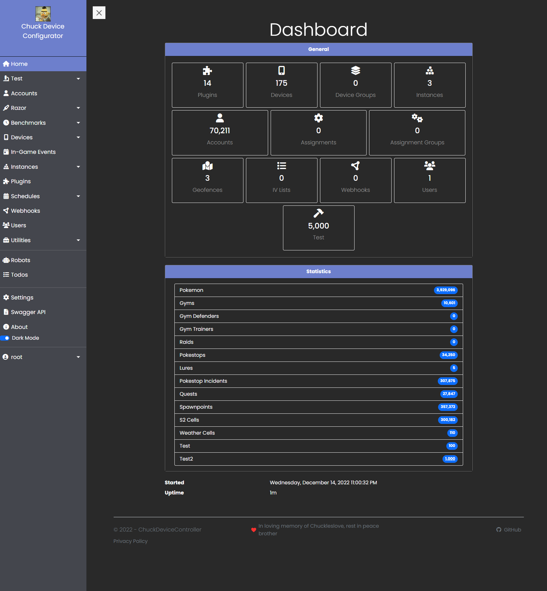

General
Home
Screenshots
Dashboard
Install Requirements
Getting Started
Applications
ChuckDeviceConfigurator
ChuckDeviceController
ChuckDeviceCommunicator
ChuckDeviceProxy
Plugin System
Create a Plugin
API Documentation
Examples
Host Interfaces
Entity Interfaces
Visual Studio Templates
Plugins Included
Overview
BitbucketAuthProviderPlugin
DeviceAuthPlugin
Example.DotNetCorePlugin
FindyJumpyPlugin
GitLabAuthProviderPlugin
HealthChecksPlugin
MemoryBenchmarkPlugin
MicrosoftAuthProviderPlugin
MiniProviderPlugin
PogoEventsPlugin
RazorTestPlugin
RedditAuthProviderPlugin
RequestBenchmarkPlugin
RobotsPlugin
TestPlugin
TodoPlugin
VisualStudioAuthProviderPlugin
Miscellaneous
3rd Party Authentication
Custom Settings
About
Dedication
Credits
TODO
GitHub
Author
ChuckDeviceController
»
General »
Screenshots
Edit on GitHub
Screenshot Previews
Dashboard

GitHub
« Previous
Next »